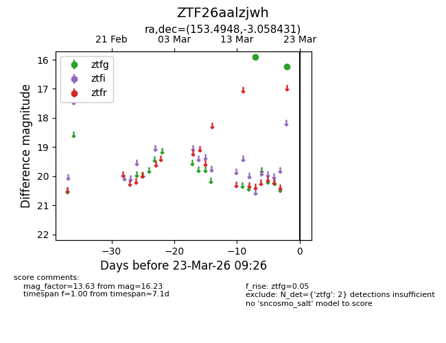
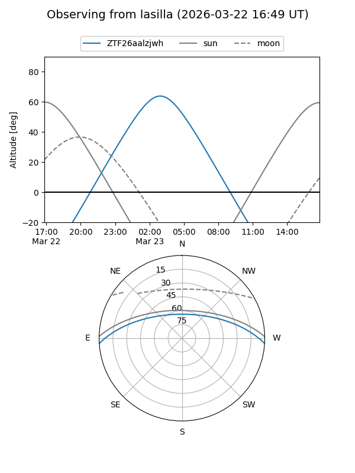
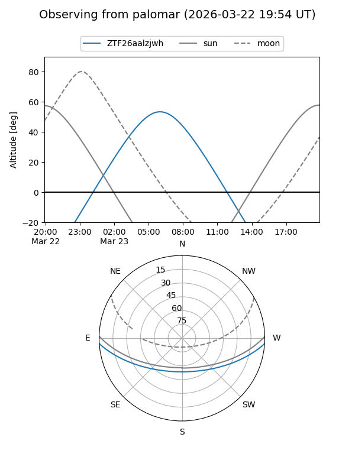

ZTF26aalzjwh
Target ZTF26aalzjwh at 2026-03-23 09:28
Aliases and brokers:
FINK: link
Lasair: link
ALeRCE: link
alt names
ZTF26aalzjwh (ztf,fink_ztf)
Coordinates:
equatorial (ra, dec) = 153.4948,-3.05843
equatorial (HMS+DMS) = 10:13:58.74,-03:03:30.35
galactic (l, b) = (245.1754,+41.51090)
Flags:
Photometry:
last ztfg=16.23
2 ztfg detections
Lightcurve

Visibility


Additional plots